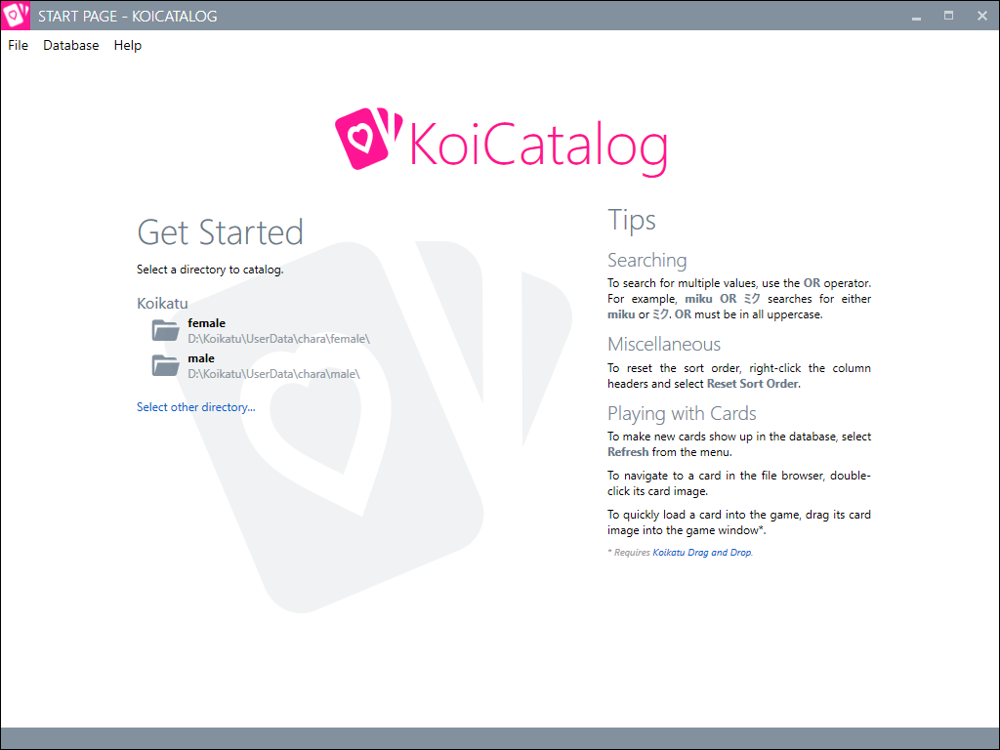
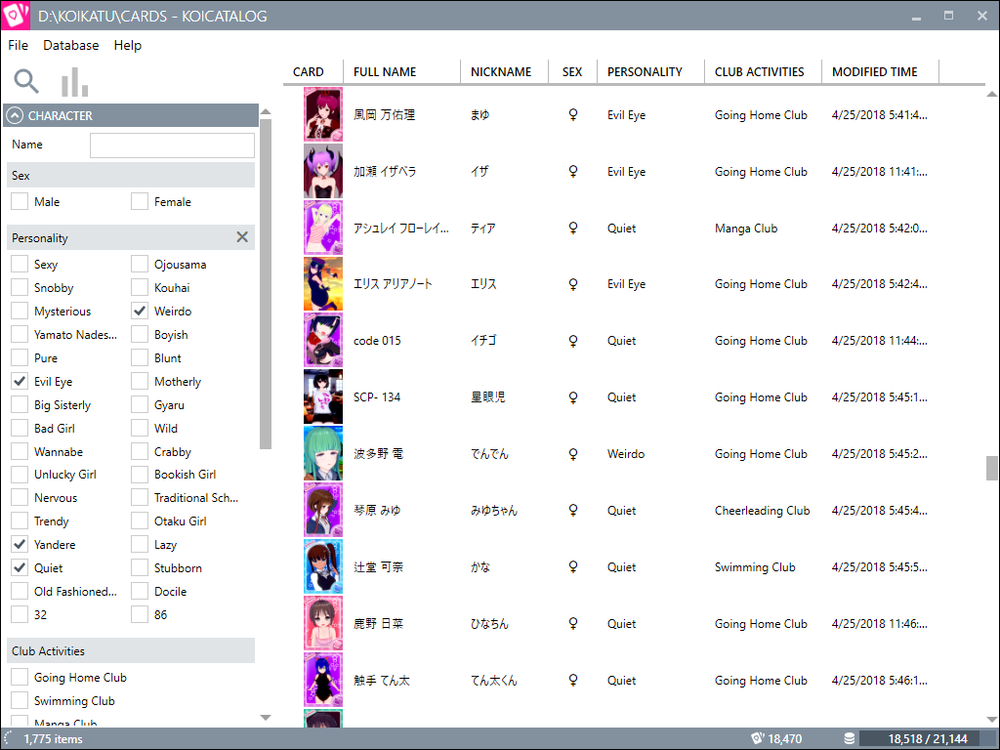

Screenshots


System Requirements
.NET Framework 4.6.1*
* May already be installed with recent Windows updates.
Change Log
1.1
- New search/sort options:
- File name
- Teeth type
- Hair color
- Skin color (sort-only)
- Skin type
- Reworked the stats panel and add more stats.
- Made it possible to open directories from a command line or by dragging them onto the .exe.
- Misc. other changes.
1.0
More Information
KoiCatalog on GitHub